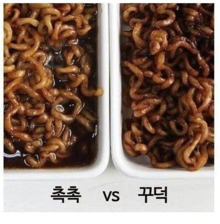

하 ㄹㅇ 어렵지 않냐 ㅋㅋㅋ
파김치 있음 꾸덕하게 끓인게 ㅈㄴ 맛있긴해~

하 ㄹㅇ 어렵지 않냐 ㅋㅋㅋ
파김치 있음 꾸덕하게 끓인게 ㅈㄴ 맛있긴해~
ㄹㅇ둘이 섞으면 존맛일듯
꾸덕이 근본이고 촉촉이 신흥 아닌가 2000년대 초에 짜장범벅 유행하면서 세력 넓어진거
와... 꾸덕이 압도적이네... 난 밥말아야되서 촉촉임
뭐,..라고? 밥을..만다고..?
저도 촉촉파이지만 이 분처럼 밥을 말아야 해서 그렇다는 주장에는 동의하지 않음을 미리 밝힙니다.
꾸덕 뻑뻑 예야
촉촉한 초코칩이나 드세요
촉촉이라 말하지 마라
물조절 실패한거지
우리 어무이..
물파게티 너무 좋아하신다..
내가 끓이면 맛없다고 직접 해드시는데...
난 그걸 먹어보면 아무 맛도 안 난다..
물론 중간이 제일 좋지만 실패한다면 차라리 꾸덕이지
저 중간이 노멀아닌가? 둘다 물조절 실패임